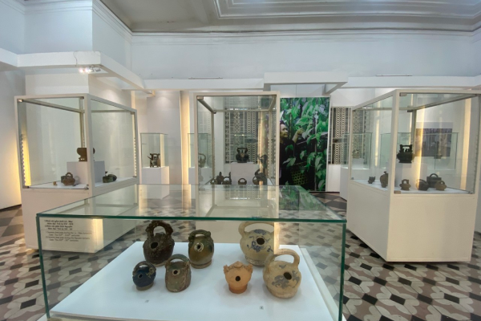
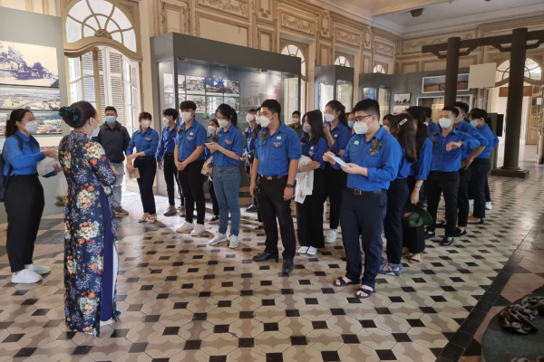

CONTACT INFORMATION
ARTICLES
NEWS

SPECIAL EXHIBITION: THE CULTURE OF BETEL AND ARECA
Chewing betel nuts is a long-standing traditional custom of the
Vietnamese people, showing the culture of communication and behavior,
and is the language of expressing feelings between people through the
betel which binds family’s intimacy and friendship. Apart from the
Vietnamese, many ethnic groups in different regions, as well as...
Journey to follow in his footsteps
On the morning of December 19, 2021, the Thu Duc City Youth Union
organized for 91 typical advanced youth examples in 2021 to visit,
research and study at the Ho Chi Minh City Museum in the program
“Journey to Ho Chi Minh City”. follow in his footsteps”...

Proud of the city named after Uncle
In the spring of the Year of the Tiger (1698), Lord Nguyen sent the
governor of the Citadel to Nguyen Huu Canh to enter the Southern
capital, set up the administrative system, “establishing Saigon as Tan
Binh district” with the meaning of building a new land. peace,
stability and development...
EXHIBITION OPENING: “90 YEARS – THE SOCIAL GOLDEN Imprints”
Celebrating the 90th founding...
Within the framework of activities to celebrate the 90th founding
anniversary of the Vietnam Women’s Union (October 20, 1930 – October
20, 2020) and the 10 years of Vietnam Women’s Day, the City Women’s
Union, The Department of Culture and Sports of Ho Chi Minh City
cooperated with relevant units to organize the exhibition “90 years –
Golden imprints of the Association”...